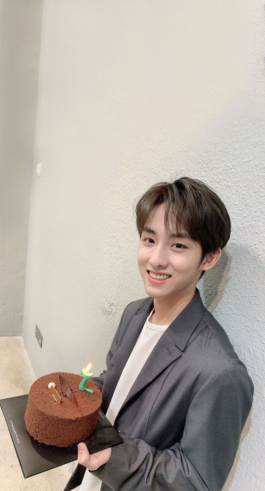
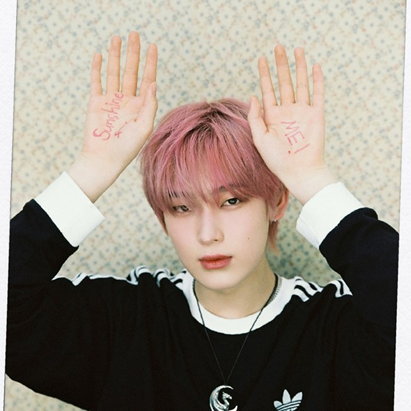

WayV is a chinese boy group with 7 members. The group consist of Kun, Ten, WinWin, Lucas, Xiaojun, Hendery and YangYang. WayV is under S.M Entertainement and it's a sub-unit of NCT. NCT ia a korean boy group. WayV debuted on January 17, 2019, with the album called “The Vision”

KUN

stage name: Kun
birth name: Qian Kun
korean name: Jeon Gon
birthday: January 1st, 1996
zodiac sign: Capricorn
height: 176 cm
nationality: Chinese
TEN

stage name: Ten
birth name: Chittaphon Leechaiyapornkul
korean name: Lee Young Heum
chinese name: Li Yong Qin
birthday: February 27th, 1996
zodiac sign: Pisces
height: 171 cm
nationality: Thai
WINWIN

stage name: WinWin
birth name: Dong Si Cheng
korean name: Dong Sa Sung
birthday: October 28th, 1997
zodiac sign: Scorppio
height: 179 cm
nationality: Chinese
LUCAS

stage name: Sunoo
birth name: Kim Seon Woo
birthday: July 24th, 2003
zodiac sign: cancer
height: 177 cm
nationality: Korean